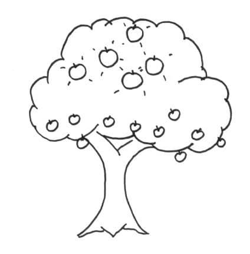

If you are serious about continuous improvement, you should learn the improvement kata.
Retrospectives are great to pick all the low hanging improvements. Once you’ve caught up with the industry’s best practices, retrospectives risk drying up. Untapped improvement opportunities likely still exist in your specific context. The improvement kata can find those.

Here is how we applied the improvement kata to gain 25% of productivity in my previous team.
The Situation
Thanks to repeated retrospectives, the team had been improving for 2 years. Retrospectives seemed like a silver bullet. We would discuss the current problems, grasp an underlying cause and pick a best practice. Most of the time, that fixed the problem.
Sometimes it did not work though. Even if the issue came back in a later retrospective, it would not survive a second scrutiny. In the previous two years, the team had transformed the way it worked. It adopted TDD, incremental refactoring, pair programming, remote work, automated performance testing and many others.
Lately though, things did not work so well. The team was struggling with productivity issues. The team was not slowing down, but the scope and complexity of the product had grown. Features were not getting out of the door as fast as they used to. We had the habit of prioritizing improvements and bug fixes over features. That used to improve the flow enough to get more and more feature done. It did not seem to work anymore.
We tried to tackle the issue in retrospectives. We would change the way we prioritized features … To be later bogged down by bugs, technical debt or bad tools. We would discuss that in retrospective, and decide to change the priorities again … The loop went on and on a few times.
We were getting nowhere.
The improvement kata
That’s why I started to look for other ways to do continuous improvement. I stumbled upon a book called Small Lean Management Guide for Agile Teams. The book is in french, but I wrote an english review. I fell in love with the way the authors dug into the hard data of how they worked to understand and fix their problems.
To learn more about this technique, I read Toyota Kata. It details two management tools used at Toyota : the improvement and coaching katas. Some say these are Toyota’s special weapon. The thing that grew them from a small shop to the largest car manufacturer in the world.
They are katas because they are routines. They must be re-execute many times. The improvement kata should improve the flow of work. The coaching kata helps someone (or yourself) to learn the improvement kata. Every time we go through the kata, we also understand it better.
Here is how the improvement kata goes :
- Describe your end goal
- Understand where you stand about this goal by measuring facts and data
- Based on your end goal and the current situation, define where you’d like to be in 3 months or less
- Use Plan-Do-Check-Act to experiment your way to this new situation
- Plan an experiment
- Do this experiment
- Check the results of this experiment
- Act on these results.
- Either drop the experiment and plan a new one (go back to ‘Plan’).
- Or spread the change at a larger scale.
The coaching kata is a way to coach someone into applying the improvement kata. The fun thing is that you can coach yourself ! The idea is to ask questions to the coachee to remind him of where he stands in his improvement kata.
You’ll find tons of details and material about these katas on the Toyota Kata website.
Our end goal
That’s how I started to apply the improvement kata in my team. I already had an idea of our end goal : to be more productive. To be more precise :
Generating enough profit for the business while sticking to a sustainable pace.
Retrospectives could not get us there. Would the improvement kata would succeed ?
This is the first part of a series of 4 posts relating our first use of the improvement kata. In the next post, I’ll explain what we did to understand the current situation.